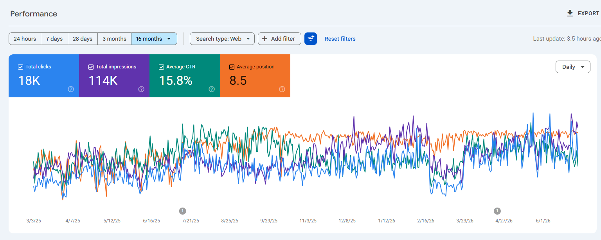
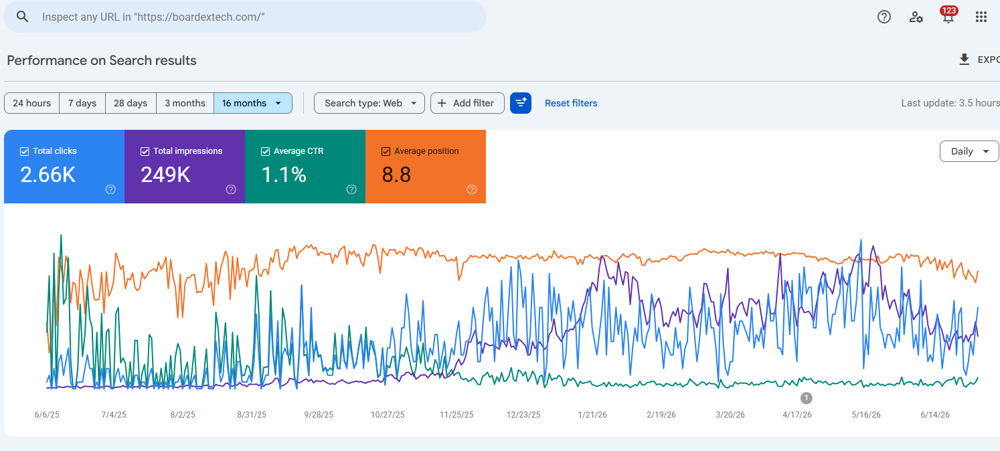
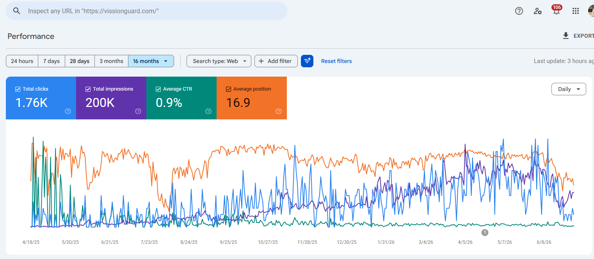
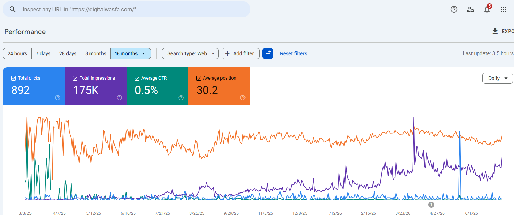
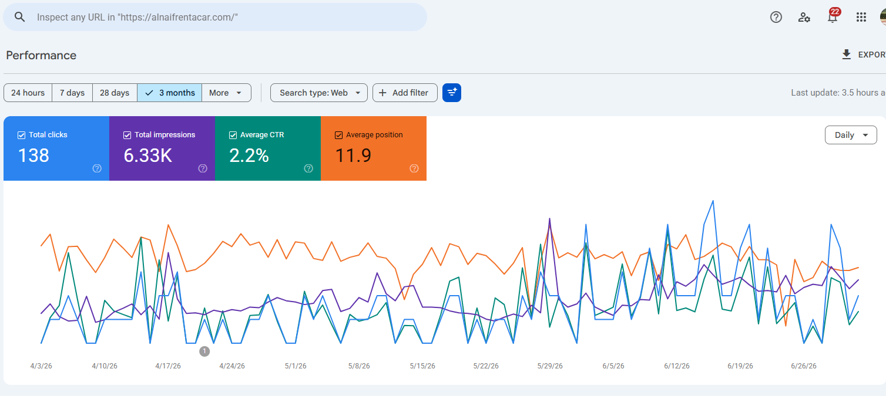
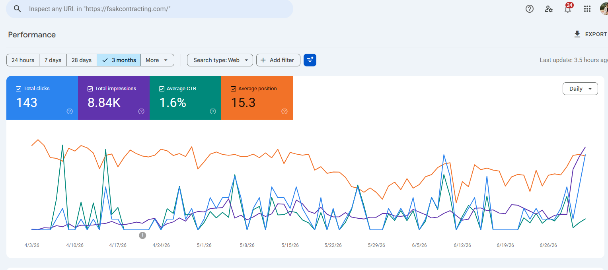
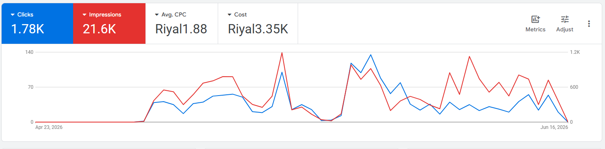
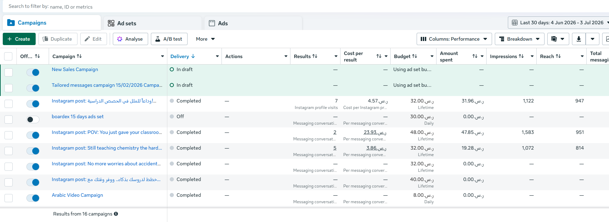

Developer mindset. SEO discipline. Marketing awareness.
I am a senior Web Developer and SEO Specialist with 8+ years of experience building responsive, search-optimised WordPress websites and turning organic visibility into measurable business results.
Clean design is nice. Clean design that ranks, loads fast, and converts is better. Humanity survives another landing page.
I pair hands-on front-end development with data-led search strategy: WordPress, Elementor, WooCommerce, HTML5, CSS3, responsive layouts, Core Web Vitals, technical audits, on-page optimisation, content planning, internal linking, and ethical link-building.
I also support digital marketing execution through Google Ads landing pages, Facebook and Instagram campaigns, social media marketing planning, brand visuals, UI layouts, and lead-focused content systems for businesses across Pakistan, KSA, the UK, UAE, US, and Europe.
- Location:Muzaffarabad, Azad Kashmir, Pakistan
- Phone:+92 312 9858 608
- Email:durrani.hasan@gmail.com
- Degree:Bachelor's in Mathematics & Statistics
- Focus:Web, SEO, Google Ads, SMM
- Mode:Remote, on-site, and agency support
Years in web, SEO, and digital work
Elementor, WooCommerce, custom layouts
Technical, on-page, semantic content
Social media marketing and brand content
Complete digital services for websites that have to perform.
I provide a practical service mix covering website design, WordPress development, SEO, Google Ads landing pages, social media marketing, e-commerce optimisation, and brand visuals.
Web Design & WordPress Development
I build modern responsive websites with WordPress, Elementor, custom sections, clean page structure, mobile-first layouts, and easy maintenance.
- Business websites
- Service pages
- Landing pages
- RTL-ready layouts
Technical SEO & Performance
I fix SEO foundations so search engines can understand the site instead of staring at it like a confused intern.
- Technical audits
- Crawlability fixes
- Core Web Vitals
- Indexing improvements
On-page SEO & Content Strategy
I build search-intent-led content frameworks around keywords, competitor gaps, semantic structure, internal links, and topical authority.
- NLP / LSI planning
- Metadata
- Internal linking
- Content briefs
Google Ads Landing Pages
I create fast, focused pages for paid traffic, lead generation, service campaigns, and improved conversion flow.
- Campaign landing pages
- Lead forms
- Tracking-ready structure
- Conversion copy
Social Media Marketing
I plan social content, post ideas, campaign messaging, social media creatives, outreach copy, and brand consistency across platforms.
- Content calendars
- Social post strategy
- Caption direction
- Brand visuals
WooCommerce & E-commerce
I improve store layouts, product pages, category structure, checkout optimisation, e-commerce SEO, and performance-focused performance details.
- Product UX
- Category SEO
- Checkout flow
- Speed optimisation
Selected projects with more context.
These projects represent WordPress development, business websites, e-commerce, SEO-friendly architecture, performance improvements, and digital presence work across different industries.
- All
- Web Design
- SEO
- E-commerce
- Marketing


I turn search visibility into measurable growth.
I added this section to show real Search Console performance snapshots from SEO projects I have worked on. Because “I do SEO” sounds cute, but screenshots and metrics do the heavy lifting.

Inspires SEO
I worked on search visibility, ranking improvement, CTR growth, organic clicks, and stronger performance tracking for Inspires.

BoardEX SEO
I handled SEO growth for BoardEX, combining technical visibility, content direction, indexing improvements, and search performance tracking.

Vission Guard SEO
I worked on SEO for Vission Guard with keyword targeting, content optimisation, local visibility, CTR review, and ongoing performance monitoring.

Digital Wasfa SEO
I improved the search structure for Digital Wasfa with organic reach tracking, SEO structure, content direction, and ranking performance review.

Al Naif Rent A Car SEO
I worked on organic visibility for Al Naif Rent A Car with local search targeting, service page optimisation, traffic tracking, and Search Console performance review.

FSAK Contracting SEO
I worked on SEO for FSAK Contracting with service visibility, keyword optimisation, technical improvements, and search performance measurement.
I manage BoardEX Google Ads and Facebook Ads campaigns.
I added this section to show paid media work for BoardEX, including Google Ads performance, Meta/Facebook campaign setup, Instagram campaign activity, ad testing, budget control, and campaign performance review.

Search campaign performance
I managed Google Ads activity for BoardEX with click generation, impression growth, CPC tracking, budget usage, keyword review, and campaign performance monitoring.

Meta campaign management
I managed Facebook and Instagram campaign setup for BoardEX, including ad sets, messaging campaigns, Instagram profile visits, creative testing, and performance breakdowns.
My experience across agencies, healthcare, e-commerce, and international client work.
My CV brings together SEO consulting, WordPress development, healthcare website work, remote agency support, e-commerce optimisation, and earlier graphic design plus network engineering experience.
Professional Summary
Hassan Javed Durrani
Senior Web Developer and SEO Specialist building responsive, search-optimised WordPress websites and sustainable organic growth systems.
- Muzaffarabad, Azad Kashmir, Pakistan
- +92 312 9858 608
- durrani.hasan@gmail.com
- LinkedIn Profile
Education
Bachelor's in Mathematics & Statistics
2014 - 2016
University of Azad Jammu and Kashmir
Quantitative foundation useful for technical SEO analysis, performance reporting, keyword research, and conversion-focused decision-making.
Marketing Focus
Digital Growth Stack
Web design, SEO, Google Ads landing pages, social media marketing, digital brand visuals, campaign messaging, and lead-focused content. Someone finally made the website and marketing talk to each other. Civilization advances by one pixel.
Professional Experience
SEO Consultant
Sep 2025 - Present
WASFA Digital Marketing Agency - Riyadh, Saudi Arabia · Remote
- Lead SEO strategy across multiple KSA client accounts with technical audits, on-page optimisation, and search-intent-driven content frameworks.
- Build bilingual English/Arabic ranking strategies and AI Overview visibility plans using NLP, LSI keyword planning, and topical authority models.
- Translate organic visibility into qualified leads through landing-page optimisation, internal linking, and conversion-focused content.
Web Developer - SEO
May 2023 - Present
ScaleUp - Muzaffarabad, Azad Kashmir · On-site / Full-time
- Develop and maintain WordPress websites with clean, SEO-friendly architecture from concept to deployment and ongoing support.
- Combine front-end development with on-page and technical SEO to improve crawlability, page speed, and organic rankings.
- Produce responsive components, structured metadata, service pages, and contact-form integrations.
Web Developer
Jan 2025 - Present
Spart Care - United Kingdom · Remote
- Design and maintain WordPress websites for healthcare services with accessibility, performance, trust, and UK service standards in mind.
Web Developer
Nov 2024 - Oct 2025
Nextnanotech Consultancy - United States · Remote
- Built scalable WordPress solutions with SEO and e-commerce optimisation across client platforms.
Web Developer
Dec 2023 - Jun 2025
DevEnvision - Islamabad, Pakistan · Remote
- Delivered tailored brand websites engineered for speed, SEO, conversion, and business growth.
Web Developer
Jun 2024 - Mar 2025
Wayz Advisory / Wayz Digitally - United Arab Emirates · Remote
- Led responsive website development with SEO and e-commerce optimisation to improve performance, UX, and search visibility.
Frontend Web Developer
Mar 2019 - Apr 2023
JVH Consult - Belgium · Remote
- Created custom WordPress websites, responsive layouts, themes, plugins, and ongoing maintenance around client brand goals.
Earlier Experience
2015 - 2021
MBK Design, Shah Tech, Fiverr, Board of IT & CisCom Solutions
- Worked across responsive web design, e-commerce optimisation, social media business development, logo design, marketing materials, website graphics, and network support.
Core competencies and tools.
A compact view of the skills stack used across web development, SEO, paid campaigns, social media marketing, reporting, and design.
Development
Search & Marketing
A clean process for design, SEO, and marketing work.
Audit
Review website structure, competitors, SEO gaps, speed, content, UX, and current marketing activity.
Plan
Define page structure, keyword targets, content flow, ad-page goals, and social campaign direction.
Build
Design and develop responsive, SEO-ready WordPress pages with strong visual hierarchy.
Optimise
Improve speed, tracking, indexing, internal links, social messaging, and conversion performance.
I can build something that looks sharp and pulls its weight.
I am available for WordPress development, SEO, Google Ads landing pages, social media marketing, e-commerce optimisation, or a complete digital presence refresh.
Location
ScaleUp, Muzaffarabad, Azad Kashmir, Pakistan